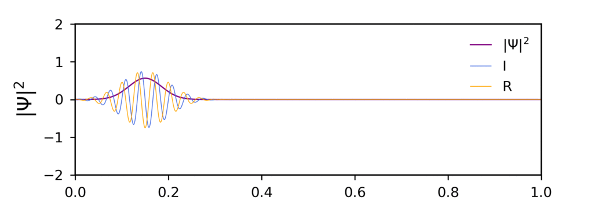

Correspondence between classical and quantum uncertainty for coupled systems
From summer 2019 I have been working on very fascinating topic: the existence of an intrinsic uncertainty in
classical mechanics measurements. This may seem counterintuitive as we know that the classical world is purely determinitic and that only when dealing with
a quntum mechanical wavefunction our theory becomes probabilistic. Yet it has been know for more than a decade that it is possible to define a
classical probability density for different confining potentials and to obtain expressions for uncertainty product in position and momentum which are
identical to the quantum mechanical counterpart.
In the literature, the examples proposed are usually simple one-dimensinal cases such as the infinite square well and the
harmonic oscillator (See Classical probability density distributions with uncertainty relations for ground states of simple non-relativistic quantum-mechanical systems and
Comparison of classical and quantum mechanical uncertainties ).
In this project I have worked alongside Dr. Karamitsos to investigate this correspondence for more complicated system in which a coupling
potential is present.
In the summer after my second year, I was asked to write an scientific essay about a certain topic in physics.
I chose to write the essay on the information paradox. This topic encompasses all the areas of physics I am more intersted in. There's an element of quantum physics
as what is needed to describe the evolution in time of the black holes in a density matrix. There is
some particle physics when considering the entanglement of Hawking pairs and the Hawking radiation. Finally there is cosmology in the study of the geometry of balck holes
and their pecularity. As it includes all this subjects areas, writing about this paradox has been quite challenging at times. But the fascination about
the topic and my wish to share it to my fellow students is what motivated me to go on.
Introduction
The black hole information paradox has been called one of the most important unsolved problem of contemporary
theoretical physics. In a nutshell, it arises from the apparent incompatibility of the principle of equivalence from general relativity and unitarity of quantum mechanics.
The existence of black holes has been theorised from the 1920s following the discovery of high-density white dwarfs which, upon reaching their upper mass limit - the Chandrasekhar
limit - were predicted to collapse under gravitational effects (overcoming the electron degeneracy pressure). The nature of the collapsing body forming the newly born
black hole is dictated by the “no-hair theorem” which states that the information regarding such object has to be encoded solely in terms of mass, electrical charge and angular momentum
- any other feature including the inner singularity is hidden behind the event horizon.
To uncover the essence of the information paradox, we first have to comprehend two pillars of modern physics:
- Equivalence principle of general relativity: in the context of black holes it states that for an infalling observer the horizon seems like any other region of spacetime
- Unitarity of quantum mechanics: states that the initial state of a quantum system should evolve according to a unitary time evolution operator (also known as S-matrix):
$$|\psi_{final}\rangle= \exp(iHt/\hbar)|\psi_{initial}\rangle,$$
which can be inverted to give the initial state.
Before 1975, it was thought that black holes could be fully described in the framework of general relativity. Taking into
account their quantum nature, Hawking showed that thermal radiation is emitted from a region near the horizon and that the
initial state of the collapsed star naturally evolves into a state that cannot be rendered by a wave-function. Due to this mechanism of energy loss, he predicted that upon reaching
a Planckian size, a black hole would eventually evaporate completely - a result incompatible with the unitarity of quantum theory.
This conflict between general relativity and quantum mechanics is known as the ‘black hole information paradox’ because the information encoded in the initial wavefunction
cannot be retrieved from the final state of the system. The paradox not only motivates to restore unitarity but also to develop a complete theory of quantum gravity [2].
The most likely conclusion is that some fundamental tenets of physics have to be reviewed.
Essay
This was just a brief introduction to the topic. To know more about the lifetime and final moments of a black hole
and to discover possible solutions to the paadox, read the full essay below.
Numerical solutions of the time-dependent Schroedinger equation
As part of my second year study modules as a theoretical physics student, I was assigned a theory computing project.
This required choosing a physics topic and tring to numerically implement solutions where analytical ones do not exist. As I have always found quantum
mechanics a very fascinating subject, my choice was naturally to work on the time-dependent Scroedinger equation and study how the wavefunction propagates
in time for a given potential.
Finite difference method
I chose to use an explicit form of the finite difference algorithm method which assumes discrete space and time.
Given a function $f$, its domain $D=[0,L] \times [0,t_{max}]$ is sliced in time and space intervals $\Delta t$
and $\Delta x$ respectively as shown in the grid on the left.
This algorithm allows the first order time derivative and second order spatial derivative to be written as
$$\frac{\partial f}{\partial t} = \frac{f\left(x^{n+1}_{l}\right)-f\left(x^n_{l}\right)}{\Delta t}+\mathcal{O}\left(\Delta t \right),$$
and
$$\frac{\partial^{2} f}{\partial x^{2}} = \frac{f\left(x^n_{l+1}\right)-2 f\left(x^n_{l}\right)+f\left(x^n_{l-1}\right)}{\left(\Delta x \right)^{2}} + \mathcal{O}\left(\Delta x ^{2}\right),$$
respectively.
1D algorithm
Starting from the one dimensional case, the complex wave function can be written as $\Psi(x,t)=R(x,t)+i I(x,t)$ where
$R(x,t)$ and $I(x,t)$ are the real and imaginary parts.
These are solved at slightly different times, namely at $0$, $\Delta t$,... for $R$ and
$\frac{\Delta t}{2}$, $\frac{3\Delta t}{2}$ for $I$.
Using the approximations for teh time derivative and Laplacian specified above, the algorithm can be written as
$$R_{l}^{n+1}=R_{l}^{n}-2\left\{\lambda\left[I_{l+1}^{n}+I_{l-1}^{n}\right]-2\left[\lambda+V_{l} \Delta t\right] I_{l}^{n}\right\},$$
$$I_{l}^{n+1}=I_{l}^{n}+2\left\{\lambda\left[R_{l+1}^{n}+R_{l-1}^{n}\right]-2\left[\lambda+V_{l} \Delta t\right] R_{l}^{n}\right\}.$$
The initial wave function was chosen to be a Gaussian distribution of plane waves
$$\Psi(x,t)=A\exp\left[-\frac{(x-x_0)^2}{2\sigma^2}\right]\exp\left[i(k_0x-\omega_0 t)\right].$$
Infinite square well
A one dimensional infinite square well of length $L$ is characterised by the following potential:
$$ V(x) = 0 \quad \text{for} \quad x \in [0,L] $$
and $\infty$ otherwise.
The choice of numerical parameters was the following: $L=20$, $k_0=20$, $\sigma=0.5$, $x_0 =5$ and $\Delta x =0.02$. The final total
probability evaluated at $t = t_{max}$ differs from the initial one by 0.07%.
This animation was realized as a gif with frames separated in time by a step of 1000 out of 40,000.
Harmonic oscillator
The particle is now confined to an harmonic oscillator potential
$$V(x)=\frac{1}{2} m \omega^2 x^{2}, \quad \quad -\infty \leq x \leq \infty.$$

The final total probability evaluated at $t = t_{max}$ had a 0.003 % difference from the initial one.
Finite potential well
A square potential barrier $V(x)$ is introduced such that
$$V(x)=V_0, \quad \text{for} \quad x \in [0,L],$$
and zero otherwise. A wave packet subjected to such potential is expected to be partially reflected and partially transmitted.
The final total probability evaluated at $t = t_{max}$ was found to be consistent to 5 significant figures.
2D algorithm
The two-dimensional finite difference algorithm arises as a simple extension of the 1D case.
The finite difference method for two spatial coordinates can eb written as
$$\frac{\partial f}{\partial t} \approx \frac{f\left(x^{n+1}_{l,m}\right)-f\left(x^n_{l,m}\right)}{ \Delta t},$$
$${\nabla}^2 f \approx \frac{f\left(x^n_{l+1,m}\right)-2 f\left(x^n_{l,m}\right)+f\left(x^n_{l-1, m}\right)}{\left(\Delta x \right)^{2}} \\ + \frac{f\left(x^n_{l,m+1}\right)-2 f\left(x^n_{l,m}\right)+f\left(x^n_{l, m-1}\right)}{\left(\Delta y \right)^{2}}.$$
The initial wave function was described once more by a Gaussian wave packet which is now expressed in terms of the two Cartesian coordinates $(x,y)$ as
$$\psi(x, y, t=0)=\mathrm{e}^{\mathrm{i} k_{0 x} x} \mathrm{e}^{\mathrm{i} k_{0 y} y} \\ \exp \left[-\frac{\left(x-x_{0}\right)^{2}}{2 \sigma^{2}}\right] \exp \left[-\frac{\left(y-y_{0}\right)^{2}}{2 \sigma^{2}}\right],$$
where $x_0 =0$ and $y_0=5$ are the initial positions in the $x$ and $y$ directions respectively and $k_0 = 20$ is the wave number.
Two dimensional well
The particle is confined to a two dimensional parabolic tube with potential:
$$V(x, y)=0.9 x^{2}, \quad-9.0 \leq x \leq 9.0, \quad 0 \leq y \leq 18.0.$$
System of two interacting particles
A more realistic treatment of quantum interactions often involves the scattering of one particle with another one rather than with an external potential. This is an extension of
what can usually be found in common quantum mechanics textbooks and is computationally very challenging.
Using a central difference algorithm, the time derivative can be expressed as
$$\Psi_{l, m}^{n+1}-\psi_{l, m}^{n-1}=\left(\mathrm{e}^{-\mathrm{i} \Delta t H}-\mathrm{e}^{\mathrm{i} \Delta t H}\right) \Psi_{l, m}^{n} \simeq-2 \mathrm{i} \Delta t H \psi_{l, m}^{n},$$
where $H$ is the two particle Hamiltonian.
Wave-packet -wave-packet quantum scattering
In the initial state, it was assumed that the initial relative distance of the particles is large enough
that any interaction can be ignored. In this case, the initial wave packet can be expressed as a product of two independent wave packets, each representing a single particle:
$$\psi\left(x_{1}, x_{2}, t=0\right)=\mathrm{e}^{\mathrm{i} k_{1} x_{1}} \mathrm{e}^{-\frac{\left(x_{1}-x_{1}^{0}\right)^{2}}{4 \sigma^{2}}} \times \mathrm{e}^{\mathrm{i} k_{2} x_{2}} \mathrm{e}^{-\frac{\left(x_{2}-x_{2}^{0}\right)^{2}}{4 \sigma^{2}}},$$
where $\sigma$ was chosen to be the same for both wave packets.

Accurate solutions were obtained by normalising the results of the algorithm. This yielded a final total probability conserved to 13 decimal places.
Report
For more information of the algorithms and their stability and for the full set of references, see the followig report.
Exchange kinetics of two molecular states in NMR
I worked on this project in the summer of 2018 after compelting my first year of studies. I was very intrigued with the idea
of applying my physics knowledge to the field of medicine and biology and this project allowed me to explore just that. This project
was done in collaoration with the Biophyisics departemnt at the University of Cagliari under the supervision of Professor
M. Ceccarelli and Doctor I. Bodrenko.
Overview
We start with a molecule in a state A and we assume that upon receiving a certain stimulus, the molecule is now in a state B.
We also assume there exists a well-defined exchange kinetics between these two states; that is the average time of exchange and the average
time of existence of the molecule in state A and B. If the kinetics is fast, states A and B cannot be observed separately. What is observed
is rather a mixture of the two states which cannot be identified with either A nor B. The goal is then to reconstruct in details the exchange
kinetics between the two molecular states.
A similar problem was tackled successfully by a team of German and Italian researchers in analysing the single-channel ion
current of the antibiotic Meropenem interacting with major general outer membrane channel of Esherichia coli bacteria.
See original paper: Sensing Single Molecule Penetration into Nanopores: Pushing the Time Resolution to the Diffusion Limit
The challenge for reconstructing the exchange kinetics is due to time constraints. In fact the existence time is of the order of the microseconds.
The theoretical model used to describe the time evolution of the system is a two-state Markov model.
We now follow the same procedure to study the exchange kinetics between two molecular states in NMR. In brief this involves studying
how the molecular spin behaves under a magnetic field and after removing it and see how the spin relaxation changes if there is a mixture of states A and B.
Report
As part of my project I had to write a report week by week compiling the relevant theory and the calculations done. The calculations include solving the Bloch equations
for one state and for a transitions between two states. For the latter, I had to perform eigenanalysis of the coupled system of equations
and investigate the limiting cases of slow and fast transitions. These relate the transition rates to dechoerence constants.
If you want to know more about the project and the physics, here is my report: